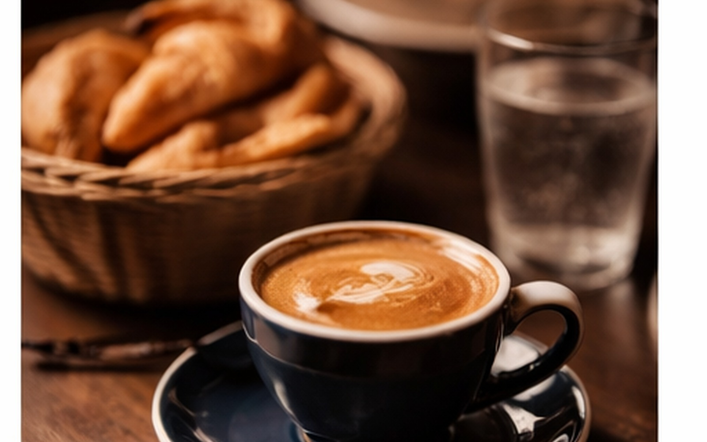
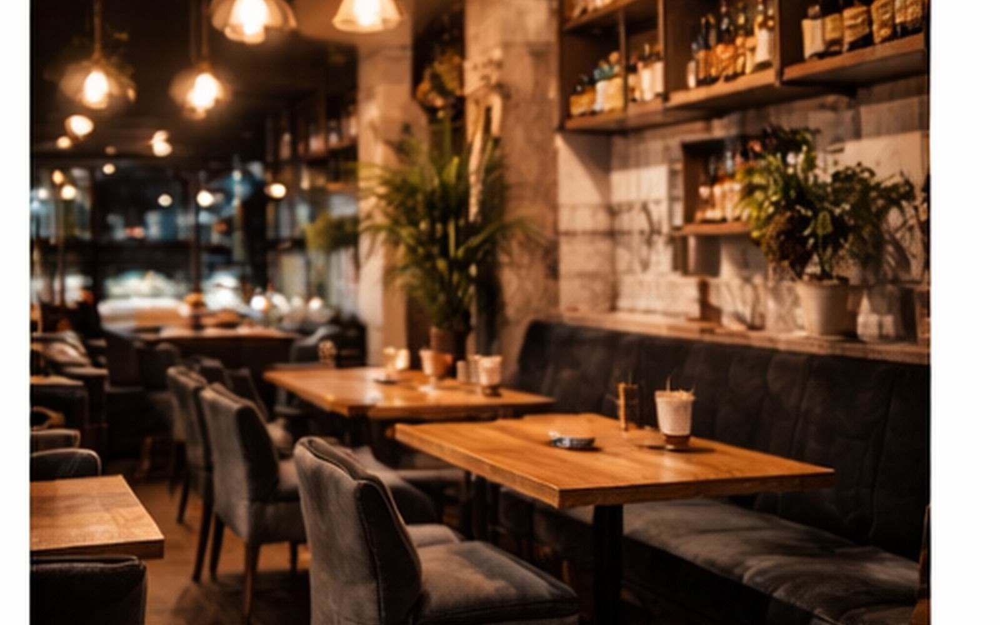

Pocillo · 90 ml
- Espresso
- Doppio
- Cortado

CAFÉ DE ESPECIALIDAD
Buen grano, técnica precisa y servicio cálido en una barra que combina ritmo de barrio con detalle premium.
Experiencia completa

Trabajamos con granos de temporada y extracción calibrada para lograr perfiles limpios, con dulzor natural y cuerpo balanceado.
La barra dialoga con la cocina y el vino para que el café también sea parte del recorrido Lombardo.
Experiencia completa
Trabajamos con granos de temporada y extracción calibrada para lograr perfiles limpios, con dulzor natural y cuerpo balanceado.
La barra dialoga con la cocina y el vino para que el café también sea parte del recorrido Lombardo.